Сегодня история про страну, которая стала самой обширной державой своего времени — а потом начала слабеть. Устраивайся поудобнее.
Перед тем как начать
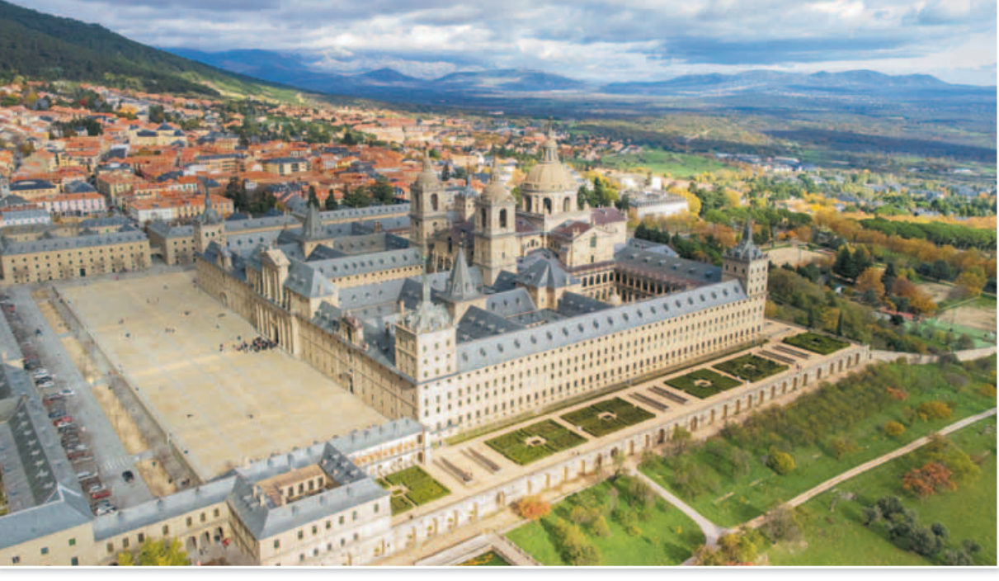
Чтобы разгадать загадку, понадобятся три слова. Все они про испанскую знать и власть:
И три главных героя:
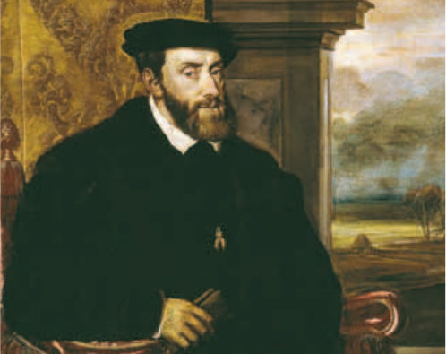
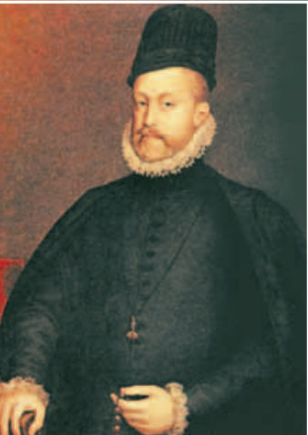
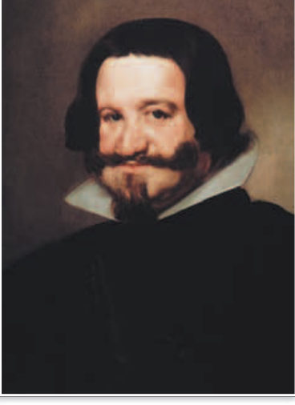
А вот что происходило в те же годы в мире и у нас, в России:
Глава первая
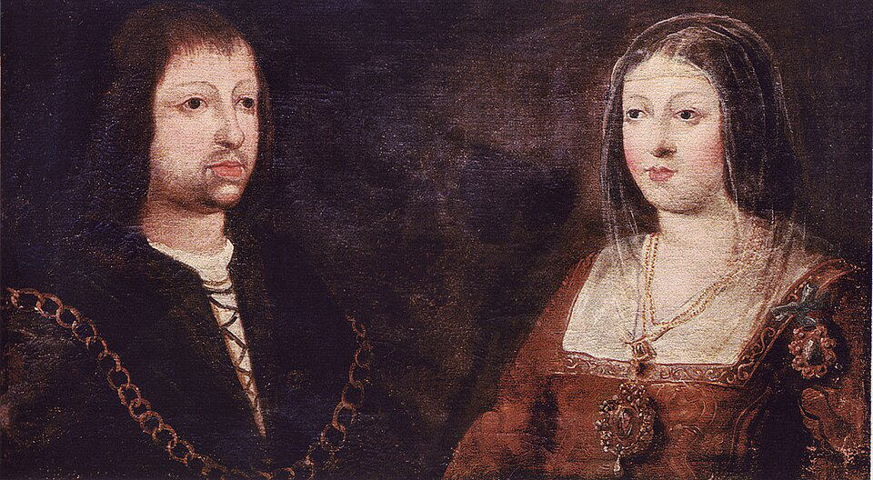
Наша история начинается в конце XV в. Два правителя — Изабелла I Кастильская и Фердинанд II Арагонский — объединили Испанию и завершили Реконкисту, долгую борьбу за освобождение полуострова от власти мусульман.
За усердие в делах веры папа римский наградил их титулом Католических королей. И те, кто правил после них, носили этот титул по праву: они тоже были убеждёнными католиками и поддерживали инквизицию.
В начале XVI в. Испания стала одной из ведущих держав Европы. И тут на сцену выходит главный герой первой главы — внук Фердинанда и Изабеллы Карл V Габсбург. Он был ещё и внуком императора Священной Римской империи. Посмотри, сколько земель ему досталось:
Земли Карла раскинулись от Европы до Америки: когда в одной его стране садилось солнце, в другой оно только вставало. Поэтому современники и говорили, что во владениях Карла V никогда не заходит солнце.
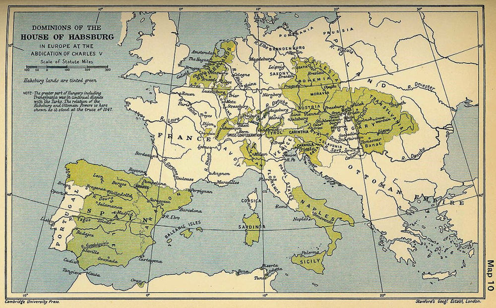
Но огромное наследство принесло и большие хлопоты. Карл родился и вырос в Нидерландах. Когда в 1517 г. он впервые приехал в Испанию, он не знал ни её законов, ни обычаев, ни даже испанского языка. Вокруг него были советники-нидерландцы.
Мало того, на выборы Карла императором ушло очень много денег. Чтобы покрыть расходы, ему пришлось добиваться повышения налогов в Испании. Как ты думаешь, понравилось ли это испанцам?
Конечно, нет. Начались волнения крестьян и горожан, а в Кастилии вспыхнуло восстание — Комунерос (1520–1522). Среди восставших было немало дворян, которых по разным причинам не устраивала политика короны.
Восставшие требовали:
Восстание охватило огромную территорию, и несколько месяцев казалось, что оно и правда заставит короля уступить. Но властям удалось расколоть восставших. Правительственные войска их разбили, и восстание подавили.
Для Карла это стало хорошим уроком. Он несколько лет прожил в Испании, многое узнал о стране и её обычаях, стал опираться на испанских советников, выучил язык и с тех пор старался не нарушать права и привилегии подданных.
Иными словами, слава Испании стоила дорого: за войны королей подданные платили своими деньгами и жизнями, а их мнения никто не спрашивал. Запомни эту мысль — она пригодится, когда будем отвечать на загадку.
Почти 40 лет Карл правил своими владениями и всё это время вёл тяжёлые войны — с Францией, с немецкими протестантами, с турками. А в 1556 г. он сделал то, что короли делают редчайше: отрёкся от трона и ушёл в монастырь. Причин было несколько: глубокая вера, пошатнувшееся здоровье и разочарование — ему так и не удалось преодолеть религиозный раскол.
Глава вторая
Уходя, Карл разделил свои владения на две части:
Всё, чем правили Филипп II и его преемники, историки называют Испанской монархией. Почему не просто «Испанией»? Потому что официального титула «король Испании» тогда ещё не было — он появился только в начале XVIII в.
Познакомься с новым героем. Филипп II правил Испанией более 40 лет. Он никогда не рубил сплеча: выслушивал советников, тщательно взвешивал все выгоды и риски и только потом решал. За это его прозвали Предусмотрительным. Правда, из-за такой осторожности его решения нередко запаздывали.
Филипп неутомимо трудился в своём кабинете, его называли «королём деловых бумаг». Чтобы управлять, ему нужны были точные сведения о своих владениях. Поэтому по его воле составляли карты, рисовали виды городов, собирали сведения обо всех населённых пунктах и писали подробную историю Испанской монархии. А для изучения природы Нового Света Филипп II отправил первую в истории научную экспедицию в Америку.
Испанская монархия и так была огромной. А в 1580 г. к ней присоединили Португалию с её колониями: у Филиппа были на неё наследственные права, когда правившая там династия прервалась. И тогда Испанская монархия стала самой обширной мировой державой, какую к тому времени знала история.
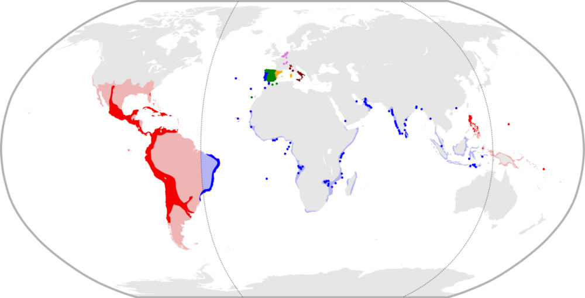
У неё была и самая сильная армия в Западной Европе. С её помощью Филипп II пытался удержать свои разбросанные по Европе владения и остановить натиск турок в Средиземноморье.
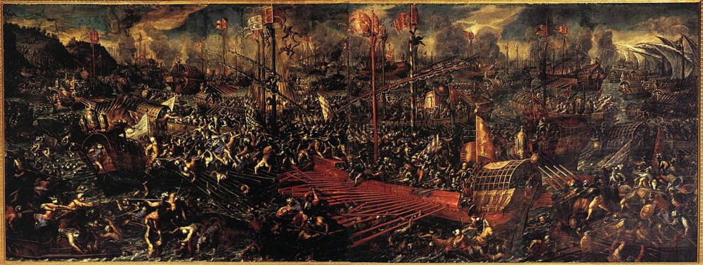
И Карл V, и Филипп II хотели, чтобы все важные решения принимались в центре — королём и его людьми. Это называется централизацией. Но им сопротивлялись и отдельные части державы, и знать. Посмотри, что в итоге получил каждый:
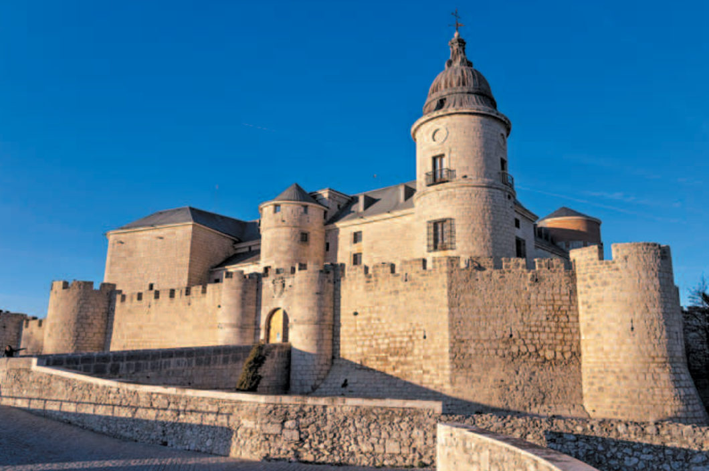
До 1561 г. постоянной столицы в Испании не было. Филипп II выбрал Мадрид — город в самом центре страны.
А неподалёку, в горах, по его приказу вырос огромный, светлый и строгий Эскориал — тот самый, с фото в начале урока. Это одновременно дворец, монастырь и королевская усыпальница: властелин половины мира хотел жить, ни на минуту не забывая о близости смерти и о жизни вечной. Здесь собрали одну из крупнейших в мире коллекций реликвий, картины лучших мастеров, а в библиотеке хранились редчайшие греческие и арабские рукописи. Уже современники называли Эскориал «восьмым чудом света».
Части державы отделяли друг от друга многие тысячи километров. Представь: из Перу в Мадрид пришло срочное известие. Пока его доставят, пока король ответит, пока ответ доплывёт обратно…
…и вот уже прошёл почти год. Распоряжения иногда приходили слишком поздно. Огромные трудности были и с тем, чтобы снабжать войска и перебрасывать их с места на место.
Самыми опасными бедами для Испанской монархии стали восстание в Нидерландах и ссора с Англией. Англия помогала мятежным голландцам и поддерживала пиратов, которые нападали на испанские колонии и корабли.
Филипп II решил покончить с этим одним ударом. В 1588 г. он собрал огромный флот для вторжения в Англию — Непобедимую армаду. Но непобедимой она оказалась только по названию: значительная часть кораблей погибла в штормах, а остальные вернулись в Испанию, так и не выполнив задачи.
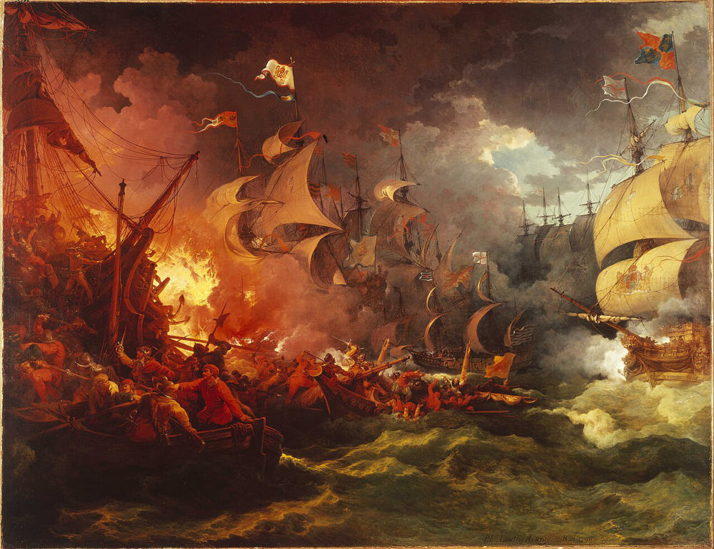
С этой неудачи начался закат морского могущества Испании.
Глава третья
Снаружи Испанская монархия казалась великаном. Но посмотрим, как она была устроена внутри. Она состояла из множества королевств, герцогств и других земель, разбросанных очень далеко друг от друга. Связывал их по сути только один монарх. В хозяйстве эти земли были мало связаны, и у каждой — свои порядки, права и привилегии.
Центром монархии была Кастилия — а она была далеко не самой развитой частью державы. Гораздо больше могли бы дать богатые Нидерланды и Италия, но у них были налоговые привилегии, и стоило Мадриду попытаться их пересмотреть, как начиналось сопротивление. Поэтому деньги на сложные и дорогие дела — например, на отпор туркам — короли собирали с огромным трудом.
Правда, у королей был ещё один важный источник дохода — американское серебро. Но и его не хватало! Государство начало жить в долг: закладывало свои доходы на годы вперёд, лишь бы получить деньги на очередную войну.
Получалось, что Испания хотела гораздо больше, чем могла оплатить. Разрыв между притязаниями монархии и её финансовыми возможностями всё увеличивался.
В конце XVI в. Испания вступила в период упадка. Беды сыпались одна за другой:
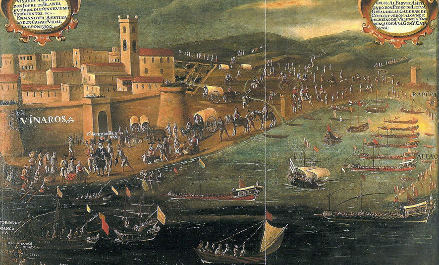
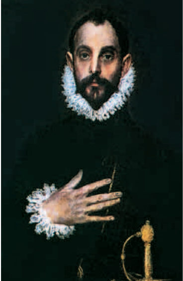
Взгляни на этого гордого господина. Это кабальеро — так обычно называли дворян, которые по богатству и положению стояли чуть выше идальго, но ниже титулованной знати. Кстати, в современной Испании «кабальеро» — просто вежливое обращение к мужчине.
А вот многие идальго были бедны и искали счастья на военной службе или в заокеанских приключениях.
Граф Оливарес был ближайшим доверенным человеком и советником короля Филиппа IV. Он понимал: без реформ победы в Тридцатилетней войне не видать. Оливарес хотел сделать управление единым и разложить бремя налогов и набора солдат поровну на все части Испанской монархии.
Звучит справедливо? Но самые привилегированные земли — Каталония и Португалия — восстали. Каталонию удержали с огромным трудом и только сохранив все её привилегии. А Португалия вернула себе независимость.
Истощённая войнами Испания, переживавшая упадок, постепенно теряла своё место в Европе.
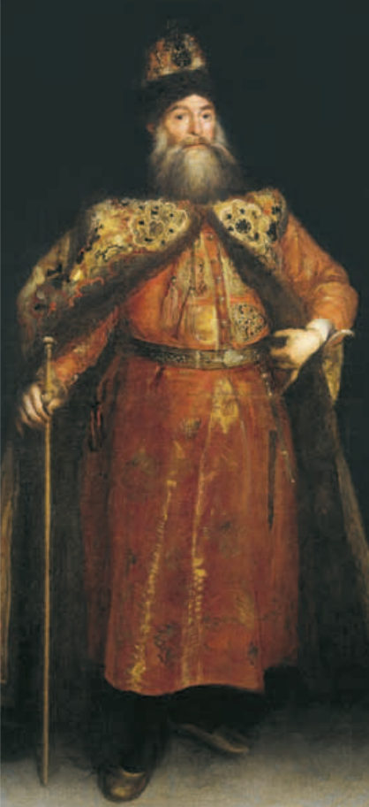
И напоследок история, которая связывает Испанию с Россией. В 1668 г. в Мадрид прибыло посольство царя Алексея Михайловича. Испания могла бы стать для России союзником против османов и выгодным торговым партнёром.
Русских гостей в Мадриде совсем не ждали и долго ломали голову, как же их принимать. Ведь они христиане, но не католики; европейцы, но так непохожи на другие европейские народы!
Предложение наладить дипломатические и торговые связи испанцев заинтересовало. Но Россия была слишком далеко, а сама Испания уже находилась в упадке.
Теперь твоя очередь
Ты прочитала всю историю. Теперь попробуй поработать как настоящий историк: с датами, с документом и со словами.
Расположите в хронологической последовательности следующие события. Нажимай на события по порядку: какое было раньше всех — первым.
Это настоящий документ того времени — отрывок из приговора инквизиции. Прочитай его внимательно.
Во-первых: Орбриан, фламандец, проживающий в Херес-де-ла-Фронтера, по профессии переплётчик, 30 лет. Он сжёг некоторые картины вместе с изображением Господа нашего Иисуса Христа и других святых и вообще исповедовал Лютерово учение, считая его хорошим. Он, кроме того, осмелился учить других. Он выказал себя упорствующим, а потому был проклят и передан представителям светского суда для сожжения живым с конфискацией его имущества, движимого и недвижимого.
Во-вторых: Хуана де Перес, португалка, женщина 40 лет. Она придерживалась иудейской веры и сохраняла её в течение многих лет, соблюдая все её предписания и церемонии, и вводила этим в соблазн других. Она исповедовалась и примирилась с церковью. Она наказывается отлучением и вечным тюремным заключением. Её движимое и недвижимое имущество конфискуется…
В-тридцать вторых: Андреас Консено, крестьянин, сказал, что перед священниками не следует исповедоваться в тяжких грехах, ибо они такие же люди, как и он. Он должен покаяться и получить сто ударов розгами.
Ответь на вопросы:
Раскройте смысл понятий «гранд» и «идальго». Как вы думаете, являются ли различия между ними отличительной чертой Испании или же являются общей чертой для многих стран? Свой ответ обоснуйте.
Разгадка
В начале XVI в. Испанию унаследовал Карл V Габсбург. Его политика вызвала восстание, после подавления которого королевская власть усилилась. Преемницей империи Карла V стала Испания Филиппа II и его преемников, достигшая во второй половине XVI в. вершины могущества, но затем вступившая в эпоху упадка.
Посмотри на дату и сначала вспомни сама, что тогда произошло. Только потом нажми и проверь себя.
На каждой карточке вопрос. Сначала ответь на него мысленно, а потом нажми на карточку и сравни со своим ответом.